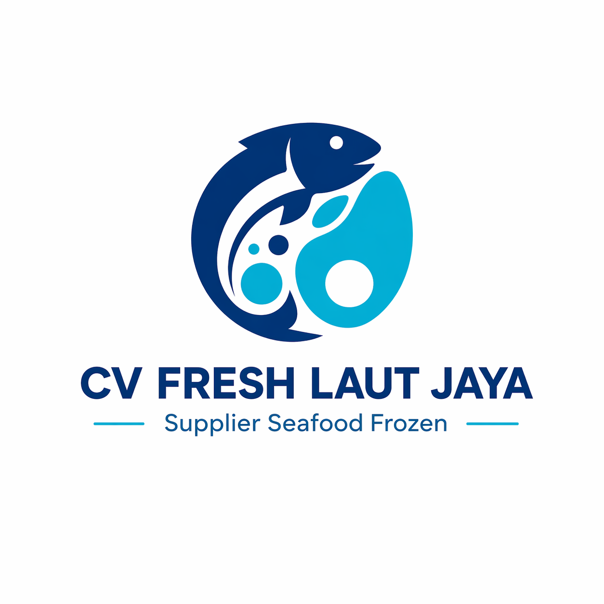

Supplier Seafood Frozen Premium
CV Fresh Laut Jaya menyediakan produk seafood frozen premium untuk kebutuhan rumah tangga, restoran, cafe, hotel, dan usaha kuliner dengan kualitas terjaga serta pelayanan profesional.
Lihat Produk Hubungi Sekarang✔ Produk berkualitas premium
✔ Sistem cold chain terjaga
✔ Cocok untuk retail & horeca
✔ Pelayanan cepat & profesional
✔ Harga kompetitif
✔ Siap supply rutin
Komitmen kami menghadirkan seafood terbaik untuk pelanggan
CV Fresh Laut Jaya adalah perusahaan yang bergerak di bidang distribusi seafood frozen premium. Kami fokus menyediakan produk berkualitas tinggi untuk customer retail maupun kebutuhan bisnis kuliner.
Dengan standar penyimpanan yang baik dan pelayanan responsif, kami berkomitmen menjadi partner terpercaya dalam kebutuhan seafood Anda.
Pilihan seafood berkualitas untuk berbagai kebutuhan
Cocok untuk sashimi, steak, grill, dan menu premium.
Tuna pilihan untuk restoran, cafe, dan retail.
Udang segar beku kualitas premium.
Cumi bersih siap olah untuk bisnis Anda.
Pelayanan cepat, rapi, dan terpercaya
Hubungi kami sekarang untuk informasi produk, harga, dan kerja sama bisnis.
Chat WhatsApp